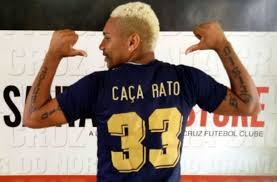
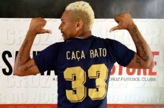

Flávio Augusto do Nascimento, mais conhecido como Flávio Caça-Rato, ou simplesmente Caça-Rato, (Recife, 29 de junho de 1986), é um futebolista brasileiro que atua como atacante. Atualmente, joga pelo Atlético Torres.
Carreira
Flávio Caça-Rato, conhecido como Caça-Rato, é um atacante que teve uma carreira diversificada no futebol brasileiro e internacional. Começou sua trajetória no Sport Club do Recife, passando por empréstimos ao Sergipe e Social Esportiva Vitória. Em 2008, foi para a Croácia e retornou ao Brasil, jogando por Cabense, América de Natal, e novamente Cabense.
Em 2011, foi contratado pelo Santa Cruz, onde conquistou o Campeonato Pernambucano de 2012, o acesso à Série C e o título da Série C em 2013. Ganhou destaque com uma matéria no The Guardian em 2014 e atingiu 100 jogos pelo clube.
Em 2015, transferiu-se para o Clube do Remo, mas deixou o clube rapidamente devido a desentendimentos com a diretoria. Em seguida, jogou pelo Guarani, Duque de Caxias, e Tupi FC. No Tupi, foi um dos principais jogadores no Campeonato Mineiro de 2017.
Passou ainda por América-PE, Atlético Itapemirim-ES, Serrano-PE, e Decisão-PE. No Ferroviário-PE, foi apresentado em junho de 2021 para a Série A2 do Campeonato Pernambucano.
 
